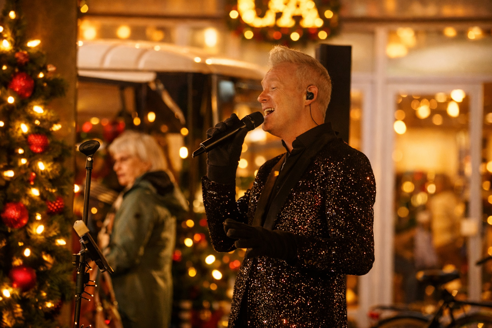
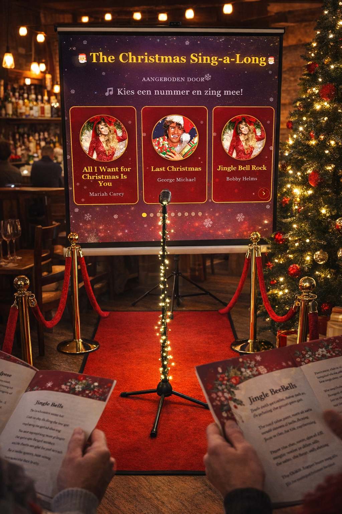
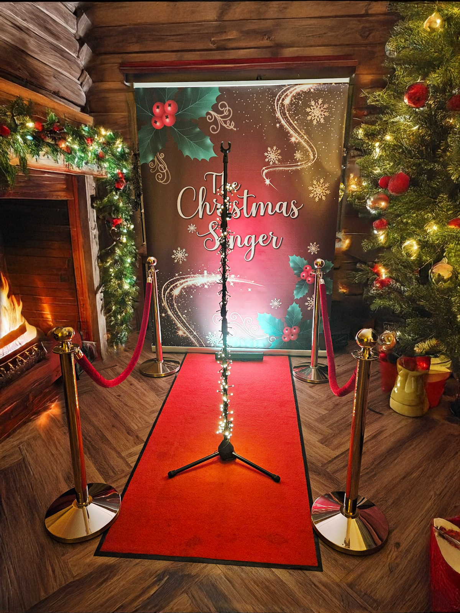
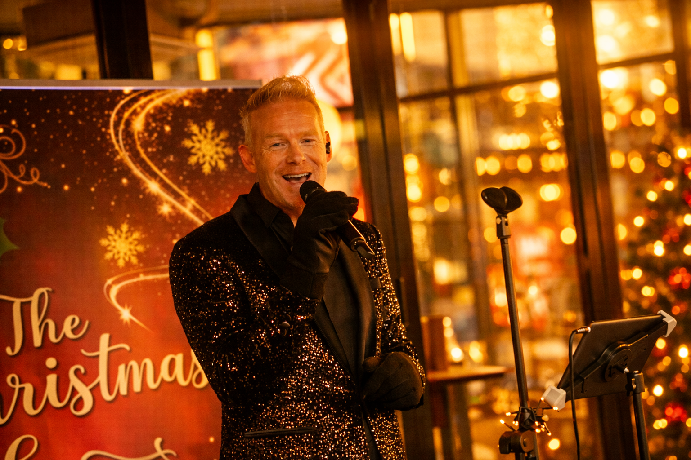

Met een sfeervol repertoire, van "White Christmas" tot "Let It Snow," brengt The Christmas Singer een warme en stijlvolle kerstsfeer naar ieder evenement. Of het nu gaat om een kerstborrel, kerstmarkt of bedrijfsfeest, The Christmas Singer zorgt voor muziek en ambiance die bijdraagt aan de magie van kerst. Mis deze kans niet! Boek nu voor 2026 en beleef een kerstfeest met live zang, volledig verzorgd en inclusief professionele geluidsset.
Een live uitvoering van White Christmas — een voorproefje van de sfeer die Bernd als De Kerstzanger brengt naar uw bedrijfsfeest, winterdiner of kerstmarkt.

Professionele kerstzanger voor bedrijfsfeesten, winterdiners, winterfairs, kerstmarkten en kerstentertainment door heel Nederland
Bernd van de Sanden is dé kerstzanger die organisatoren in heel Nederland inschakelen wanneer live kerstmuziek het verschil mag maken. Onder zijn artiestennaam The Christmas Singer treedt hij op bij bedrijfsfeesten, luxe winterdiners, winterfairs, kerstmarkten, kerst events en privé-evenementen — volledig verzorgd, inclusief professionele geluidsinstallatie en sfeerverlichting.
Met meer dan 15 jaar podiumervaring — waaronder shows voor Van der Valk Hotels, Regardz en tientallen corporate klanten — weet Bernd precies hoe hij een zaal in de kerstsfeer krijgt. Zijn warme stem, stijlvolle uitstraling en scherp gevoel voor publiek maken elk optreden tot kerstentertainment dat gasten bijblijft.
Wat Bernd onderscheidt is de combinatie van muzikale veelzijdigheid en totaalverzorging. Van intieme kerstballads tijdens een diner tot swingende feesthits op de dansvloer — hij schakelt moeiteloos. U hoeft niets te regelen: De Kerstzanger komt volledig verzorgd, geschikt voor feesten tot 150 personen, alles inbegrepen.
Van intiem dinerconcert tot swingende kerstborrel — voor elk moment de juiste toon.

Dit is een greep uit het repertoire — het volledige programma telt tientallen nummers. Speciale verzoeknummers zijn in overleg mogelijk en het repertoire wordt altijd afgestemd op uw evenement en publiek.
Bespreek uw wensenVoor elk type kerstviering een passende muzikale invulling — op locatie, bij u
Op maat samengesteld pakket nodig? Neem contact op

Laat heel de zaal meezingen — het interactieve hoogtepunt van uw kerstfeest
Til uw kerstfeest naar een hoger niveau met The Christmas Sing-a-long. De teksten van de grootste kerstklassiekers worden geprojecteerd op het scherm, en De Kerstzanger begeleidt uw gasten terwijl de hele zaal één groot koor vormt. Van White Christmas tot Jingle Bells — een warm, vrolijk en onvergetelijk moment dat élk kerstprogramma compleet maakt.
Maak uw kerstfeest magisch en zorgeloos met De Kerstzanger. Geniet samen met uw gasten van een sfeervolle live show vol warme kersthits, stijlvol gebracht door een professionele kerstzanger. Voor één vaste prijs krijgt u een complete set inclusief professionele geluidsinstallatie, een feestelijke kerst stage set met sfeerverlichting voor extra ambiance, geschikt voor evenementen tot 150 personen.
Wenst u meer maatwerk? Kies uit uitbreidingsopties zoals extra speeltijd, een grotere set of speciale verzoeknummers om het optreden volledig af te stemmen op uw wensen. Perfect voor bedrijfsfeesten, wintermarkten, luxe diners en privékerstfeesten.

Reserveer uw datum voordat de voorkeursmomenten zijn vergeven.
Oktober is nog volledig beschikbaar. Ideaal voor bedrijven die graag vroeg in het kerstseizoen starten.
Informeer naar datumNovember biedt volop keuze en is populair voor winterdinners en kerstmarkten.
Informeer naar datumDecember is het drukste kerstmaand. Populaire datums worden snel gereserveerd.
Informeer naar datumBedrijven en venues die jaarlijks terugkeren voor De Kerstzanger
"Een absolute topact. De Kerstzanger wist de perfecte kerstsfeer neer te zetten op ons bedrijfsfeest. Zijn repertoire en uitstraling waren precies wat we zochten voor ons premium klantenevent."
"Onze gasten waren overweldigd door het prachtige stemgeluid en de professionele uitstraling. De Kerstzanger maakte ons kerstdiner tot een onvergetelijke avond. Zeker een aanrader."
"Als hotel zoeken we altijd naar acts die onze gasten een bijzondere ervaring bieden. De Kerstzanger overtrof alle verwachtingen en zorgde voor een magische kerstavond."
Sfeervolle impressie van kerstoptredens door The Christmas Singer
Laat je inspireren door deze beelden van echte kerstoptredens in december 2024 — van intieme kerstborrels tot grootse bedrijfsfeesten. Elk optreden is een unieke muzikale beleving vol sfeer en warmte.
Kerst 2026 is beperkt beschikbaar. Vraag vandaag nog vrijblijvend naar de mogelijkheden.

Of boek direct via